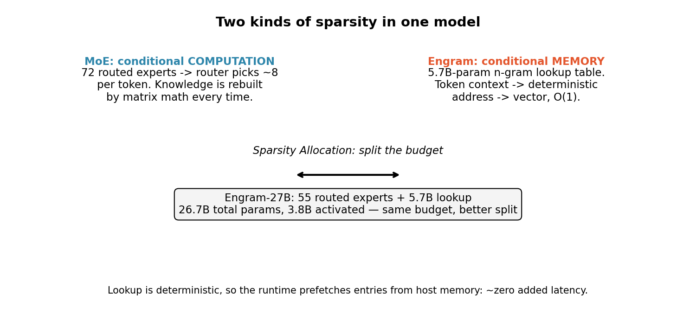
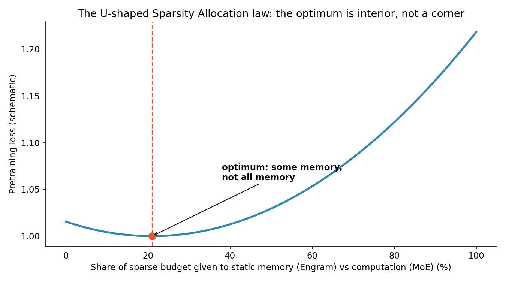
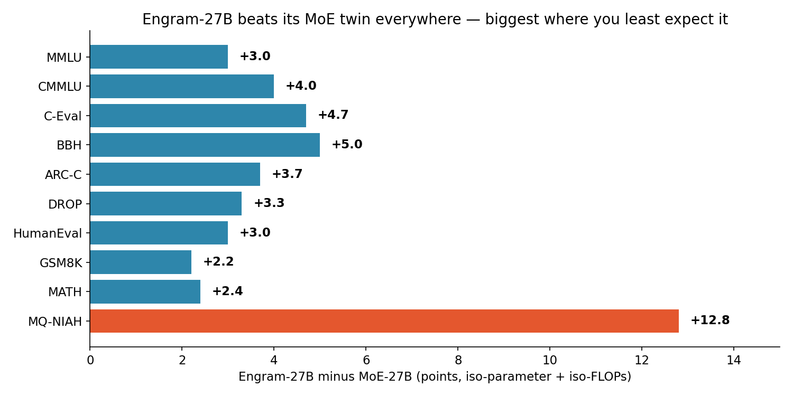
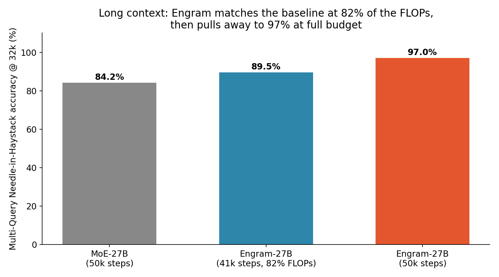

Every frontier model today has the same hidden inefficiency: it recomputes facts it already knows. Ask it for the capital of France and a few billion parameters fire, matrix-multiplying their way to "Paris" — a fact that was fixed in training and will never change. A new paper from a DeepSeek-linked team asks the obvious question nobody built for: why not just look it up?
The paper — "Conditional Memory via Scalable Lookup" (arXiv:2601.07372, submitted January 2026, revised July 2026) — introduces Engram, a module that gives transformers a native primitive for knowledge retrieval. Scaled to 27 billion parameters, it beats a strictly iso-parameter, iso-FLOPs mixture-of-experts baseline on every benchmark the authors report. The twist: the biggest wins aren't on knowledge tests. They're on reasoning and code.
The ELI5 version
Imagine two employees. One is brilliant but has no notebook: every time you ask her a question, she re-derives the answer from first principles. She gets it right, but it costs her full attention every time. The other keeps a well-indexed notebook on her desk: facts she looks up in a second, freeing her brain for the actual hard part of the job.
Today's transformers are the first employee. Mixture-of-experts (MoE) made them cheaper by waking only a fraction of their parameters per token — that's conditional computation. But MoE varies computation, not knowledge. There is no lookup primitive in a transformer, so static facts get simulated by computation, over and over, at full price.
Engram is the notebook. It's a modernized N-gram embedding: the recent token context is hashed into a deterministic address, and the vector at that address is returned in O(1). No routing decision, no matrix math, no guessing. And because the address is deterministic, the runtime can prefetch the entries from host memory before they're needed — the authors report negligible latency overhead. Added capacity that costs almost no speed is rare enough to be the whole story on its own.

How it works: the Sparsity Allocation problem
The paper's central framing is a budgeting question. Given a fixed parameter and compute budget, how much goes to neural computation (MoE experts) and how much to static memory (Engram)? The authors formalize this as the Sparsity Allocation problem and report a U-shaped scaling law for the trade-off: too little memory and you're back to recomputing everything; too much memory and you starve the reasoning backbone. The optimum is interior, not a corner — which means the right answer is a mix, and the mix is measurable.

Guided by that law, the team built Engram-27B: the same 30-block transformer backbone as the MoE-27B baseline (2,560 hidden size, 32-head multi-head latent attention), but with routed experts cut from 72 to 55 and the freed parameters reallocated into a 5.7B Engram memory. Total: 26.7B parameters, 3.8B activated per token — same budget, different split.
The mechanism the authors propose for why it works is worth stating plainly, because it's counterintuitive. Engram relieves the backbone's early layers of the job of reconstructing static knowledge, which effectively deepens the network available for complex reasoning. And by delegating local token dependencies to lookups, it frees attention capacity for global context — the model stops spending its attention budget re-deriving what the last few words imply and spends it on what the whole document means.
The numbers: wins where you least expect them
A memory module ought to help with knowledge retrieval, and it does — MMLU +3.0, MMLU-Redux +3.4, CMMLU +4.0, C-Eval +4.7. But the larger gains land in general reasoning and code/math:

- BBH +5.0 (50.9 → 55.9) and ARC-Challenge +3.7 — hard reasoning, not memorization.
- HumanEval +3.0 (37.8 → 40.8), GSM8K +2.2, MATH +2.4, DROP +3.3 — code and math move too.
- Multi-Query Needle-in-Haystack: 84.2 → 97.0 (+12.8) at 32K context — the long-context payoff of freed attention.
The efficiency story is just as strong. With only 82% of the pretraining FLOPs (41K vs 50K steps), Engram-27B already matches the baseline's long-context perplexity while beating it on RULER retrieval. At full budget it pulls further away. And scaling hasn't saturated: Engram-40B reduces pretraining loss further, with the gap to baselines still widening at the end of training — the authors read this as memory capacity not yet fully exploited at current token budgets.

The honest caveat — where this could break
Three things to keep in view. First, these are the authors' numbers, not an independent audit — the baseline is their own MoE twin, and the paper is from a DeepSeek-affiliated team evaluating a DeepSeek-direction architecture. Second, a lookup table is only as good as its contents: Engram's memory is static, learned in training, so it can't absorb new facts after deployment the way a retrieval system over a live database can. It's a better memory for what the model already knows, not a way to teach it something new. Third, the prefetch story depends on infrastructure: deterministic addressing only hides latency if the serving stack actually prefetches from host memory — a software commitment, not a free property of the architecture. The code is open (github.com/deepseek-ai/Engram), so the replication test is available to anyone with the compute.
Takeaways
- MoE solved compute sparsity; Engram attacks memory sparsity. The two are complementary, not competing — and the paper's U-shaped law says the right split is measurable, not vibes.
- The biggest gains are in reasoning, not recall. Freeing early layers from static reconstruction effectively deepens the network — BBH +5.0 and HumanEval +3.0 from a lookup table is the result that should change how you think about architecture budgets.
- Long context is where it compounds. Multi-Query NIAH 84.2 → 97.0, and parity at 82% of the FLOPs — attention freed from local bookkeeping is attention spent on the whole document.
- Deterministic is a feature, not a detail. O(1) lookup plus prefetching means 5.7B extra parameters at negligible latency cost — the rare case where capacity doesn't bill you in speed.
- Watch the replication. Engram-40B's still-widening loss gap says this axis isn't saturated. If independent labs confirm the U-curve, "how much of your budget is memory?" becomes a standard architecture question alongside "how many experts?"